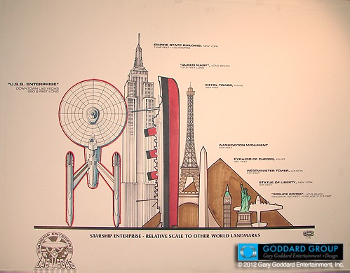

About Technologe
About technologe about technologe about technologe
700
3.2CSScsssscsscsssscssWhat
太初有道，道与神同在，神就是道。这件事始于上帝，每一个信仰虔诚的修道士每天以谦卑的赞颂，重复永远不变的责任。但是现在我们透过一层阴暗的玻璃看去，在真相坦然揭露之前，我们所看到的是在误解中的片断，(啊，多么暖昧不明！)因此我们必须忠实地说出它的标志，尽管对我们而言，那些标志是那么幽暗难解，并且仿佛和一种邪恶的意志纠缠混合。
When
蒙天主恩宠，我成了那件事情的见证人。为了敬神之故，我不能说出那家修道院的名字。当时是1327年年底，路易皇帝亲临意大利，恢复神圣罗马帝国的尊严，遵循上帝的旨意，意欲将在阿维尼翁令使徒圣名蒙羞的篡位者、买卖僧职者和异教创始者驱逐(我所说的是罪恶的雅克，不敬神的人称他约翰二十二世)。
How
前端前端前端前端前端前端前端前端前端前端前端前端前端前端前端前端前端前端前端前端
- What--------40%
- What--------30%
- What--------30%
THE thchnologe of front
前端技术领域也许，为了使我所卷入的那些事件更易于了解，我该追述在那段时期所发生的史实，就我当时的领悟、经历，及我现在记忆所及，加上我后来所听说的其他故事——只希望我老迈的记忆还能将那么多复杂的事件连缀起来。
在本世纪初，教皇克莱门特五世把教宗所在地移到阿维尼翁，使得罗马受到当地野心君主的荼毒，渐渐地这个基督教圣城变成了一个马戏团，或者该说是妓院，被各领主所瓜分；虽名为共和，实则不然，被武装军队袭击，饱受掠夺。神职人员——包括教区僧——指挥恶徒和盗窃集团，手握刀剑，犯罪并组织邪恶的交易。如何才能阻止卡普·孟狄再度名正言顺地戴上神圣罗马帝国的皇冠，恢复原属于凯撒所有之世俗领域的尊严呢？